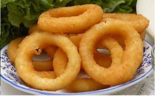

Onion Rings (spurs-style)

Description
Rings from an onion usually dipped in batter then fried
Ingredients
2 onions sliced into rings
1 1/2 cups soda water or sprite
1 cup flour
2 tsp aromat(or add salt)
2 tsp steers salt
1/2 tsp pepper powder